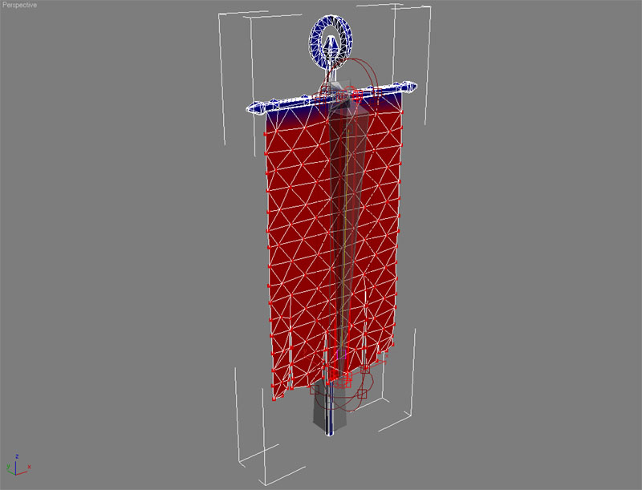
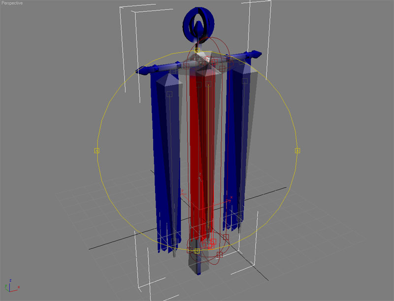
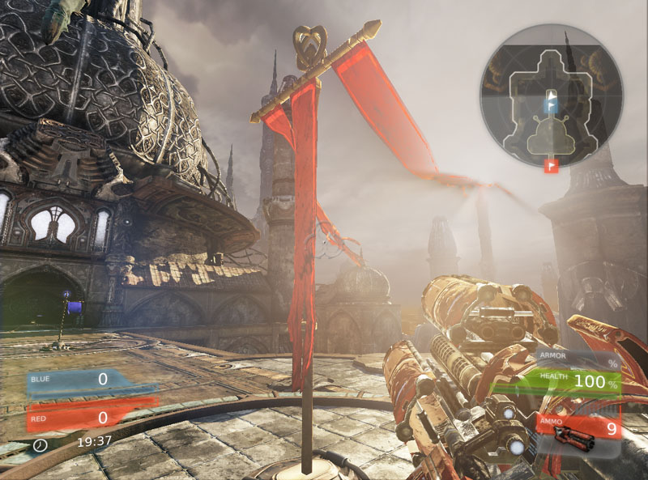
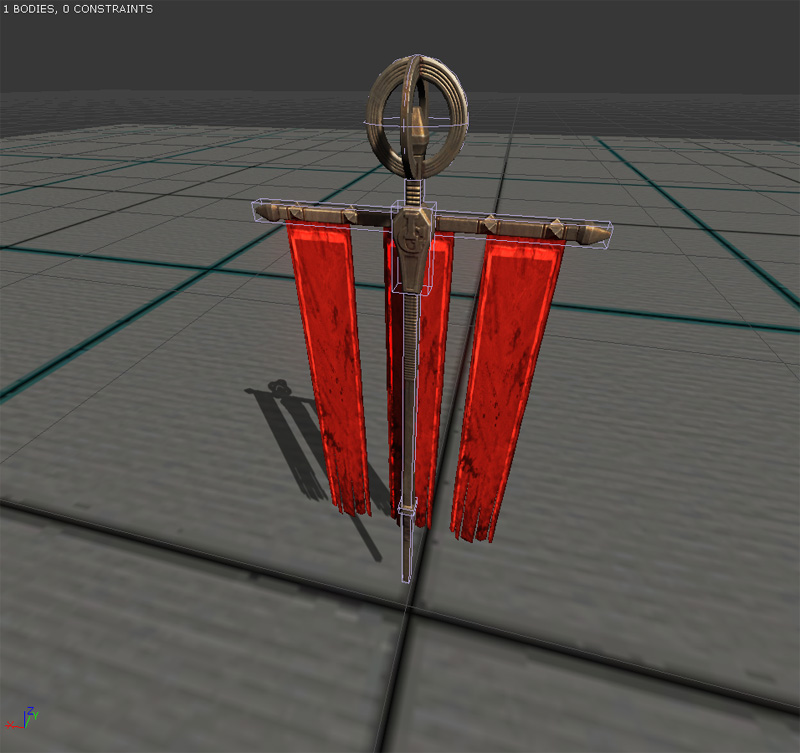
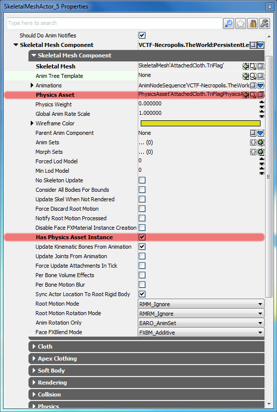
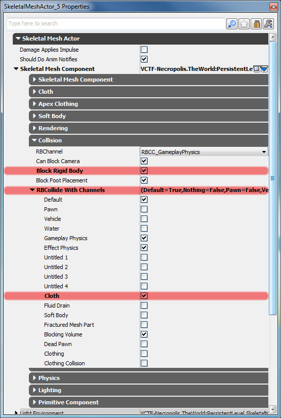
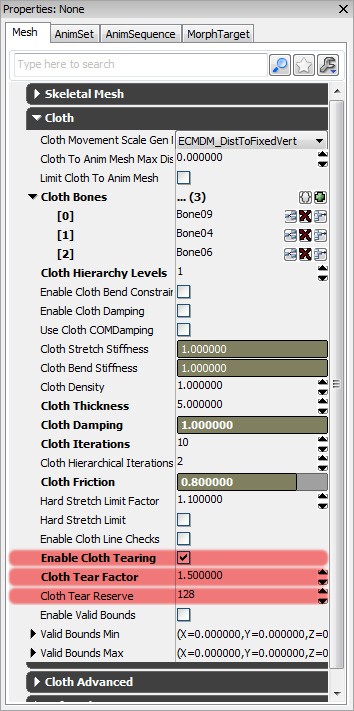
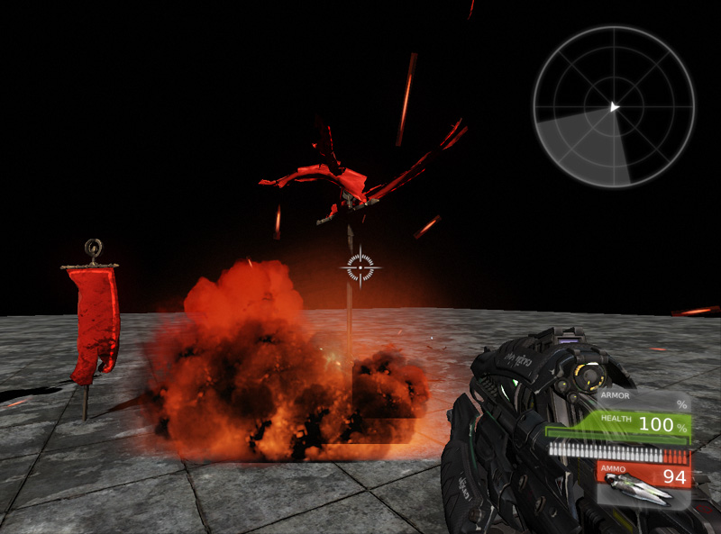

UDN
Search public documentation:
PhysXClothReferenceCH
English Translation
日本語訳
한국어
Interested in the Unreal Engine?
Visit the Unreal Technology site.
Looking for jobs and company info?
Check out the Epic games site.
Questions about support via UDN?
Contact the UDN Staff
日本語訳
한국어
Interested in the Unreal Engine?
Visit the Unreal Technology site.
Looking for jobs and company info?
Check out the Epic games site.
Questions about support via UDN?
Contact the UDN Staff
布料参考指南
概述
虚幻引擎 3 中的布料仿真是通过 PhysX 的布料仿真引擎进行处理的。使用这项技术，您可以创建具有交互性的装饰，例如窗帘和旗帜。由于布料可以接收到碰撞事件，所以它们会受到玩家、他们的武器及其他基于事件的活动影响。 这个屏幕截图会显示一面迎风飘扬的旗帜。

如何创建 PhysX 布料
PhysX 会通过使用预先细分的骨架网格物体仿真布料，可以使它们的布料顶点加权到骨骼上。如果您希望将这个布料附加给某一部分网格物体，那么将一些边布料顶点设置给另一个骨骼。
在骨架网格物体中设置骨骼
在这个屏幕截图中，由于将这个旗帜将会被帮到水平的钢杆，所以已经将顶排的顶点加权给另一个骨骼。旗帜的其他顶点已经被加权给旗帜骨骼。
为多个布料仿真设置骨骼
在这个屏幕截图中，由于将三个旗帜绑到了水平钢杆上，所以使用六个骨骼来控制这个布料仿真。对于每个旗帜，将一个骨骼加权给旗帜网格物体的顶排，将第二个骨骼加权给其他的旗帜网格物体。这样可以将旗帜与水平钢杆绑在一起。
在游戏中，您可以按照意愿尽可能多地仿真单独的布料片，只要您为它们定义了骨骼。
设置骨架网格物体仿真布料
默认情况下，会关闭布料，因为大多数骨架网格物体不需要布料仿真。因此，您必须将其打开。在 CPU 上仿真 PhysX 布料，这样必须首先打开 CPU 植皮。您通过在 AnimSet 编辑器内的 Skeletal Mesh（骨架网格物体）选项卡中更改属性打开这个选项。 启用 CPU 植皮后，接下来您需要定义用来使布料顶点加权的骨骼。向下滚动 Skeletal Mesh（骨架网格物体）选项卡，然后展开这个 Cloth（布料）项。将数据元素添加到 Cloth Bones（布料骨骼）数组中，然后键入这些骨骼的名称，与它们显示在 Skeleton Tree（骨架树形）面板中的名称完全相同。
启用 CPU 植皮后，接下来您需要定义用来使布料顶点加权的骨骼。向下滚动 Skeletal Mesh（骨架网格物体）选项卡，然后展开这个 Cloth（布料）项。将数据元素添加到 Cloth Bones（布料骨骼）数组中，然后键入这些骨骼的名称，与它们显示在 Skeleton Tree（骨架树形）面板中的名称完全相同。
 这是您设置布料仿真需要做的极少一部分工作。您现在可以点击
这是您设置布料仿真需要做的极少一部分工作。您现在可以点击 如果您按住 W，您可以在预览视图中调整所使用的 Wind（风）。按住 W 及左鼠标按钮允许您调整风的方向。按住 W 及右鼠标按钮允许您调整风的强度（只有向上或向下移动鼠标才会产生效果）。
如果您按住 W，您可以在预览视图中调整所使用的 Wind（风）。按住 W 及左鼠标按钮允许您调整风的方向。按住 W 及右鼠标按钮允许您调整风的强度（只有向上或向下移动鼠标才会产生效果）。
碰撞和 PhysX 布料
布料只会与刚体发生碰撞，例如，带有物理资源的骨架网格物体和其中含有刚体的静态网格物体。通常在默认情况下不会启用它，但是打开它是一件非常容易的事情。对于旗帜网格物体而言，这些旗帜需要可以与旗杆碰撞。因此，要为骨架网格物体创建物理资源。在创建刚体过程中需要多加注意，因为希望得到布料的精确仿真。保证刚体可以促成碰撞，您可以通过仿真物理资源进行这项测试。

从这里，您可以将您的已经启用布料的骨架网格物体放置到世界中。您需要设置一些属性才能使布料碰撞正常工作。首先，设置骨架网格物体 Physics Asset（物理资源） 并勾选 Has Physics Asset Instance（具有物理资源实例） 。
下一步，您将需要调整 Cloth（布料）参数。展开 Cloth（布料）选项。勾选 Enable Cloth Simulation（启用布料仿真） 、 Cloth Awake On Startup（启动时激活布料） 并设置 Cloth Wind（布料风） 创建一个会使波浪此起彼伏的环境影响力。 最后，展开 Collision（碰撞）选项。勾选 Block Rigid Body（阻挡刚体） 。任何您需要用来与布料交互的 actor 都必须阻挡刚体。PhysX 会使用碰撞通道过滤出可以及不可以与各种其他物理仿真进行交互的内容。它将允许您创建一些可以与布料进行交互的物理 actor，还会创建一些不可以交互的 actor。由于旗帜网格物体需要与布料发生碰撞，所以 Cloth（布料） 通道必须在 RBCollide With Channels 中进行设置。
最后，展开 Collision（碰撞）选项。勾选 Block Rigid Body（阻挡刚体） 。任何您需要用来与布料交互的 actor 都必须阻挡刚体。PhysX 会使用碰撞通道过滤出可以及不可以与各种其他物理仿真进行交互的内容。它将允许您创建一些可以与布料进行交互的物理 actor，还会创建一些不可以交互的 actor。由于旗帜网格物体需要与布料发生碰撞，所以 Cloth（布料） 通道必须在 RBCollide With Channels 中进行设置。

布料不会在编辑器世界视窗内进行仿真，即使是在 Real Time（实时）打开的情况下。不过，如果您输入 PIE，这个布料现在将会仿真同时与自己发生碰撞。要设置其他需要与布料发生碰撞的 actor，请按照上面的方法设置它们的 Collision（碰撞）属性。记住，对于骨架网格物体，将物理资源用于碰撞，所以记住要分配它们。使用 Unrealscript 启用布料
有时您可能希望骨架网格物体组件初始情况下不会仿真布料。比如当布料在一个桌子上的时候，或者是在一个没必要对它进行仿真的地方。您可以使用下面的代码段在骨架网格物体组件上启用布料。// 打开和关闭布料仿真 SkeletalMeshComponent.SetEnableClothSimulation(true);
在 Unrealscript 中使用 PhysX 布料
大部分 PhysX 布料 API 都显示在 Unrealscript 中，这样您就可以在运行时调整它们生成有趣的效果。所有这些函数都在 SkeletalMeshComponent.uc 中，并且可以在骨架网格物体组件上使用。仿真函数
- SetEnableClothSimulation(bool bInEnable) - 打开和关闭这个骨架网格物体的布料仿真。
- SetClothFrozen(bool bNewFrozen) - 切换布料的激活状态仿真。它要比进行 SetEnableClothSimulation 操作消耗的内存少，而且可以在处于冻结状态时保持它的形状。
- SetEnableClothingSimulation(bool bInEnable) - 切换布料的激活状态仿真，并在处于冻结状态时保持它的形状。
- UpdateClothParams() - 通过 SkeletalMesh 属性更新内部布料仿真的参数。
- SetClothExternalForce(vector InForce) - 修改应用到布料上的外部影响力。将会继续应用直到它被改变为止。
- SetAttachClothVertsToBaseBody(bool bAttachVerts) - 从这个组件 actor 附加给的物理体中附加/分离顶点。
- ResetClothVertsToRefPose() - 将这个布料中的所有定点移动到参考姿势，然后将它们的速度清零。
Get 函数
- GetClothAttachmentResponseCoefficient() - 会返回布料的附加物反应系数。
- GetClothAttachmentTearFactor() - 会返回布料的附加物撕裂因数。
- GetClothBendingStiffness() - 会返回布料的弯曲硬度。
- GetClothCollisionResponseCoefficient() - 会返回布料的碰撞反应系数。
- GetClothDampingCoefficient() - 会返回布料的阻尼系数。
- GetClothFlags() - 会返回可以代表布料旗帜的位屏蔽。
- GetClothFriction() - 会返回布料的摩擦力。
- GetClothPressure() - 会返回布料的压力。
- GetClothSleepLinearVelocity() - 会返回布料的休眠线速度。
- GetClothSolverIterations() - 会返回布料的解决方案迭代次数。
- GetClothStretchingStiffness() - 会返回布料的拉伸硬度。
- GetClothTearFactor() - 会返回布料的撕裂因数。
- GetClothThickness() - 会返回布料的厚度。
Set 函数
- SetClothAttachmentResponseCoefficient(float ClothAttachmentResponseCoefficient) - 会设置布料的附加物反应系数。
- SetClothAttachmentTearFactor(float ClothAttachTearFactor) - 会设置布料的附加物撕裂因数。
- SetClothBendingStiffness(float ClothBendingStiffness) - 会设置布料的弯曲硬度。
- SetClothCollisionResponseCoefficient(float ClothCollisionResponseCoefficient) - 会设置布料的碰撞反应系数。
- SetClothDampingCoefficient(float ClothDampingCoefficient) - 会设置布料的阻尼系数。
- SetClothFlags(int ClothFlags) - 会设置布料的旗帜位屏蔽。
- SetClothFriction(float ClothFriction) - 会设置布料的摩擦力。
- SetClothPressure(float ClothPressure) - 会设置布料的压力。
- SetClothSleepLinearVelocity(float ClothSleepLinearVelocity) - 会设置布料的休眠线速度。
- SetClothSolverIterations(int ClothSolverIterations) - 会设置布料解决方案将会使用的迭代次数。
- SetClothStretchingStiffness(float ClothStretchingStiffness) - 会设置布料的拉伸硬度。
- SetClothTearFactor(float ClothTearFactor) - 会设置布料的撕裂因数。
- SetClothThickness(float ClothThickness) - 会设置布料的厚度。
- SetClothSleep(bool IfClothSleep) - 会设置布料的休眠状态。
- SetClothPosition(vector ClothOffSet) - 会设置布料的位置。
- SetClothVelocity(vector VelocityOffSet) - 会设置布料的速度。
附加物函数
- AttachClothToCollidingShapes(bool AttatchTwoWay, bool AttachTearable) - 会将布料附加给当前碰撞的形状。
有效边界函数
- EnableClothValidBounds(bool IfEnableClothValidBounds) - 为布料启用有效边界计算。
- SetClothValidBounds(vector ClothValidBoundsMin, vector ClothValidBoundsMax) - 会设置适用于布料的有效边界。
撕裂 PhysX 布料
可以撕裂在虚幻引擎 3 中仿真的布料。这项操作只需通过勾选 Enable Cloth Tearing（启用布料撕裂） 并设置 Cloth Tear Factor（布料撕裂因数） 就可以完成。Cloth Tear Factor（布料撕裂因数）允许您调整在将布料撕裂之前必须施加在它上面的外力的强度。理想情况下，您希望这个值要比 1 大，否则只要对布料稍加施力就会将它撕裂。对于复杂的网格物体，它可能必需增加 Cloth Tear Reserve（布料撕裂保留） 才能生成正确的效果。

外力应该使用 NxForceField 类进行施加。
调试 PhysX 布料
您可以通过 AnimSet 编辑器 PhysX Debug（PhysX 调试） 菜单启用调试渲染信息。将这些选项都勾选选中，这样就会同时在游戏中显示调试效果。

其他 PhysX 布料属性
- Use Cloth COM Damping - 这可以帮助保持受到阻尼作用的布料的震动弹力逐渐减小。 一般，阻尼式相对于世界帧来使得事物逐渐变慢的。但是，如果附加一部分布料(想象一下附加到旗杆上的旗帜)，并且附加物正在快速地运动，然后没有附加到旗杆上的顶点的阻尼将会使得它们试图脱离。启用COM阻尼，布料将会在“本地帧”中衰减，从而降低这个效果。
- Cloth Relative Grid Spacing - 这是一个优化参数。它定义了在第一次碰撞检测中布料在内部的表现形式。(Broadphase culling(粗测极端筛选))。如果这个数值非常小，那么将会产生较大的粗测性能消耗，但是将会降低细节碰撞计算的值。如果数值太大，加载将会从粗略计算切换到精细计算。通常，这个参数有个可选的范围，默认情况下设置它为0.25.
- Enable Cloth Two Way Collision - 一般，刚体将会影响布料，但反之则不行。也就是，您可以把布料放到一个对象上，它将会挂披在那个对象上。但是如果您拖拽布料，对象不会感受到任何力。设置
bEnableClothTwoWayCollision后，对象将感受到力。 - Cloth Special Bones - 这些项指定了布料附加物的骨架网格物体。这是一种特殊形式的附加物，如果其中一种骨骼的 BoneType 设置为 CLOTHBONE_BreakableAttachment ，那么附加物将会毁坏。如果拖拽的力度足够大，将可以把布料从骨骼上撕裂下来。
- Enable Cloth Line Checks - 如果您想设置能够设计布料的功能，那么需要启用这一项。
- Cloth Metal Penetration Depth - 该选项和金属布料结合使用，当刚体和金属布料碰撞时，碰撞的主动方将会发生较大的变形。
- Cloth Tear Reserve - 该项用于布料撕裂。当撕裂布料时，创建额外的顶点。这指出了可以创建多少个额外的顶点。一旦布料撕裂创建的顶点数量达到这个值，您就不能在撕裂布料了。
下载
- 下载这部分内容。(PhysXClothExample.zip)